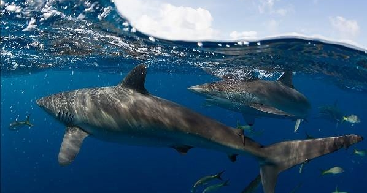
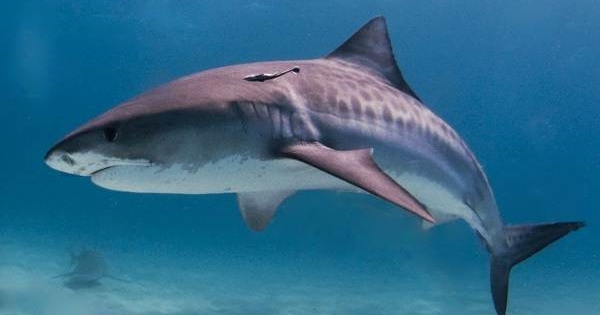
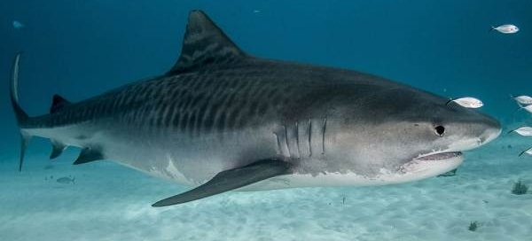
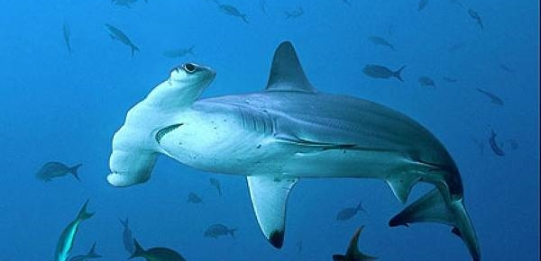
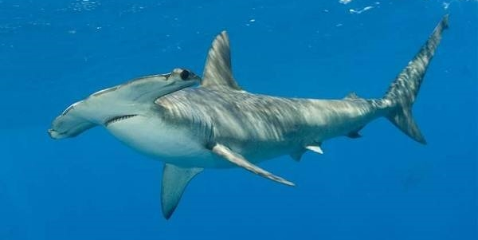

Поширені види акул
Тільки назви акул займуть не одну сторінку. У класифікації виділяють 8 загонів риб, які включають
приблизно 450 видів, тільки три з них харчуються планктоном, решта – хижаки. Деякі сімейства пристосовані
жити в прісних водах.
Скільки видів акул існує в природі насправді, можна тільки здогадуватися, адже іноді знаходять особин,
яких вважали безнадійно пішли в історію
Акулячі роду і види об’єднані в загони:
- кархаринообразных (кархаридных);
- разнозубообразных (бичачих, рогатих);
- многожаберниковообразных (многожаберных);
- ламнообразных;
- воббегонгообразных;
- пилоносообразных;
- катранообразных (колючих);
- плоскотелых представників.

Незважаючи на різноманітність хижаків, акул зближують особливості будови:
- основою скелета риб є хрящова тканина;
- всі види дихають киснем за допомогою зябрових щілин;
- відсутність плавального міхура;
- гострий нюх – кров можуть відчути за кілька кілометрів.
Кархаринообразные (кархаридные) акули
Зустрічаються у водах Атлантичного, Тихого, Індійського океанів, в Середземному, Карибському,
Червоному морях. Небезпечні види акул. Типові представники:
Тигрова (леопардове) акула
Відома своєю поширеністю в прибережних зонах Америки, Індії, Японії, Австралії. Назва відображає
забарвлення хижаків, схожий на тигрячий малюнок. Поперечні смуги на сірому тлі зберігаються, поки акула
не виросте довжиною понад 2 метри, потім вони бліднуть.
Максимальний розмір до 5,5 метрів. Жадібні хижаки ковтають навіть неїстівні предмети. Самі є
промисловим об’єктом — цінуються печінка, шкіра, плавці риби. Акули дуже плідні: в одному посліді
з’являється до 80 живонароджених дитинчат.


Акула-молот
Мешкає в теплих водах океанів. Рекордна довжина гігантської особини зафіксована в 6,1 м. Вага великих
представників до 500 кг. Зовнішній вид акули незвичайний, масивний. Спинний плавник, схожий на серп.
Попереду «молот» практично прямий. Улюблена здобич – хвостоколи, отруйні скати, морські ковзани.
Приносять потомство раз в два роки, за 50-55 новонароджених. Небезпечні для людини.

